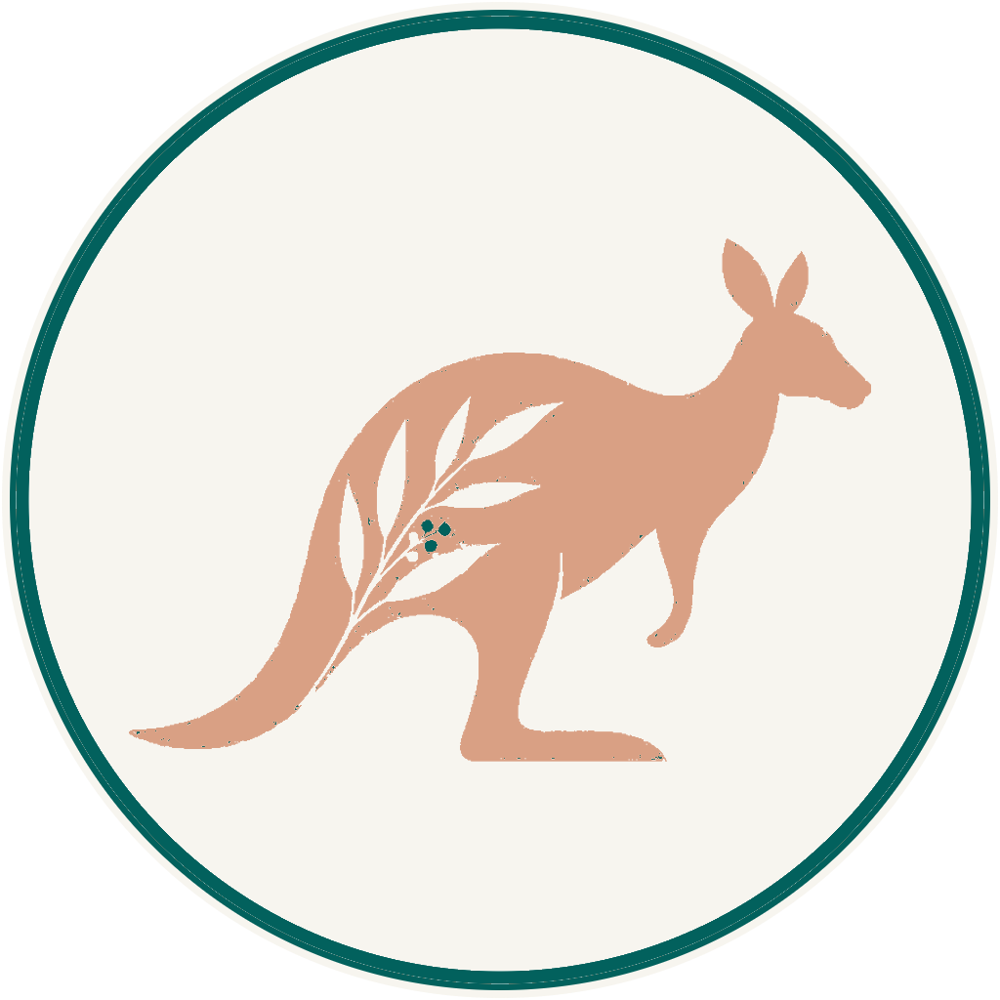

Australia or
New Zealand?
Two countries, one comparison
A side-by-side look at building a healthcare career, and a life, in each country: health systems, registration, pay, visas, family life and how to decide.
 Kettle on. About 9 min
Kettle on. About 9 min
The two countries at a glance
Australia is the bigger market. New Zealand is smaller, with one national health service. Beyond that, the employer, the town and the role often matter as much as the country.
| Topic |  Australia | New Zealand |
|---|---|---|
| Health system | State and territory public systems, plus a very large private sector. | One national public service, Health New Zealand – Te Whatu Ora, plus a smaller private sector. |
| Jobs market | Larger, with more employers and settings. | Smaller; openings vary by profession and region. |
| Registration | A national scheme run by Ahpra for the professions it regulates. Some, such as sonography and social work, sit outside it. | Each profession has its own regulator, with a practising certificate renewed every year. |
| Pay | Often higher in headline terms, varying by state, setting and role. Employers add superannuation. | Public pay set mostly by national collective agreements. |
| Living costs | Big differences between the major cities and regional areas. | Auckland and the regions differ a lot, mainly on housing. |
| Family | Partner work rights, school fees and healthcare depend on the visa and, for schools, the state or territory. | Visas for your partner and children, and school and healthcare eligibility, depend on your visa, occupation and pay. |
| Lifestyle | Huge variation between states, cities and regions. | Huge variation between regions, from Auckland to small rural towns. |
A radiographer in regional Western Australia lives a very different life from one in central Sydney, and a busy New Zealand emergency department is not a quiet place to work. Compare the places and roles you would actually take.
How the health systems work
Both countries run universal public healthcare funded largely through taxation, with a private sector alongside. How that’s organised is where they differ.
| Topic | Australia | New Zealand |
|---|---|---|
| Public system | Run at state and territory level, each jurisdiction manages its own public hospitals and services, within a national framework and Medicare. | One national service, Health New Zealand – Te Whatu Ora, delivering public hospital and community care across the country. |
| Private sector | Very large and well established, especially in imaging, surgery and diagnostics, a major source of roles. | Present and growing, but smaller; most acute care sits within the public service. |
| Scale | Large population spread across big cities and vast regional areas. | Smaller population concentrated in a handful of cities, plus high-demand regional centres. |
| What it means for you | More employers and settings to choose between; you’ll often weigh public against private. | One employer for most public roles, so terms are more consistent between regions. |
In Australia, part of your decision is often public or private, two quite different working cultures. In New Zealand, the bigger question is usually which part of the country, because the system itself is more consistent from place to place.
Getting registered to practise
You can’t work as a clinician in either country until the relevant regulator has registered you. The principle is the same; the machinery differs.
A national scheme, for most professions
For the professions it covers, Australia regulates through a national scheme run by Ahpra (the Australian Health Practitioner Regulation Agency), with a national board for each profession. That registration applies Australia-wide. Some professions sit outside Ahpra and have their own arrangements: sonographers are accredited through the Australian Sonographer Accreditation Registry, for example, and social workers through the Australian Association of Social Workers.
- For several professions, qualifications from comparable overseas regulators (for example the UK’s HCPC or Ireland’s CORU) can be recognised through a faster pathway.
- Otherwise the relevant board assesses your qualification, and a national examination is sometimes required.
- Registration and a migration skills assessment are separate processes; you may need one, the other, or both.
Profession-specific boards
New Zealand regulates each profession through its own responsible authority or board, and once registered you hold an Annual Practising Certificate (APC) that you renew each year.
- The board assesses your qualification, recent clinical experience and competence against New Zealand standards.
- Routes are often a comparable-country pathway (more streamlined) or a qualifications-assessed pathway.
- You’ll typically need verified qualifications, evidence of recent practice, a criminal-history check and, where required, English-language evidence.
Neither country is simply easier. For some professions New Zealand’s route is shorter; for others, Australia’s is. Your profession and where you trained decide it.
Pay & the cost of living
A single number would mislead you here. This is how pay works in each country, and what to weigh alongside it.
Agreements, awards & super
Public-sector pay is set by state-based enterprise agreements and awards, which also define progression, overtime and allowances. On top of pay, employers pay compulsory superannuation (retirement contributions).
The very large private sector, with high volumes in some specialties, can support strong earning potential, but figures vary by state, setting and role.
National collective agreements
Public pay is largely set by national collective agreements, which give clear bands and progression across the country. Private work can add to this for some roles.
"What will I earn?" is a per-role question, so we answer it per role.
Cost of living matters just as much as headline pay. Both countries have affordable regional areas and pricier big cities; housing is the biggest variable in each. The right comparison is always take-home pay against local costs for the specific place you’d live, not one country’s average against another’s.
| Topic | Australia | New Zealand |
|---|---|---|
| Retirement savings | Employers pay superannuation on top of your pay: 12% of ordinary earnings since 1 July 2025. If you leave Australia for good on a temporary visa, you can usually claim it, minus tax. | KiwiSaver is for people entitled to live in New Zealand indefinitely, so it usually starts once you hold residence. From 1 April 2026 the default is 3.5% from you, matched by 3.5% from your employer. |
| Tax | Income tax comes out of your pay, plus a 2% Medicare levy for most taxpayers. | Income tax and the ACC earners’ levy come out of your pay. |
| Housing | Usually the biggest cost. Sydney and Melbourne cost far more than most regional towns. | Usually the biggest cost. Auckland and Queenstown cost far more than most regional towns. |
Visas & the right to work
Both countries have routes for eligible healthcare professionals to move with their families. Partner work rights, schooling, healthcare and their costs depend on the visa and your circumstances, so check them before you decide.
| Topic | Australia | New Zealand |
|---|---|---|
| Common work route | Employer-sponsored temporary work visas are the usual entry for skilled clinicians, with skilled and nominated pathways alongside. | The Accredited Employer Work Visa is the usual route, tied to an accredited employer and a skilled role. |
| Residence | Employer-nomination and skilled-migration routes can lead to permanent residence, depending on your occupation, visa and circumstances. | Many healthcare roles are on the Green List, with straight-to-residence or work-to-residence routes. Eligibility depends on your occupation and registration. |
| Your family | Partner work rights depend on the visa granted. Public school fees for the children of temporary visa holders vary by state and territory. | Which visas your partner and children can get depends on your visa, occupation and pay. School and healthcare eligibility depend on the visa too. |
| Good to know | Some visa routes also require a migration skills assessment, separate from professional registration. | Registration and visa steps are best sequenced together, usually a job offer first, then the visa. |
Both countries reward getting the order right: registration, offer and visa need to happen in the correct sequence, and small timing details (like the validity window on certificates) trip people up. Ethicare is not an immigration adviser. Check your visa with the Department of Home Affairs or Immigration New Zealand.
Lifestyle, geography & family
Both are English-speaking and outdoors-oriented, but they feel different to live in.
Big and varied
A warm climate across much of the country, several large coastal cities, and everything from beaches to outback. Distances are big, which shapes travel and where you settle. Life in a regional town is very different from life in Sydney or Melbourne.
Green and compact
A cooler, greener landscape, with mountains, coast and lakes rarely far away. Auckland is the one large city; most people elsewhere live in smaller cities and regional towns, where commutes are usually shorter.
Māori culture is woven through everyday life in New Zealand; Australia’s draw is often its range of places to live. For schools, healthcare and settling in, read moving to Australia with your family and moving to New Zealand with your family.
Picture an ordinary Tuesday, not just the holiday photos, that’s the life you’re choosing.
Where could you see yourself living?Explore destinations that suit youCareer & scope of practice
| Topic | Australia | New Zealand |
|---|---|---|
| Market size | Large, major public systems plus one of the world’s biggest private sectors, so more roles and settings. | Smaller, with workforce shortages in many professions. |
| Specialisation | Broad scope to sub-specialise, with clear career ladders in bigger centres. | Broad general scope with room to develop expertise; often more autonomy earlier. |
| Ways of working | Choice between public and private cultures; high volumes in some private settings. | Mostly public; the private sector is smaller. |
Australia’s scale gives you more directions to grow and more private options. New Zealand often gives broader scope earlier. Either way, the service you join shapes your week more than the flag does.
Which country might suit you?
Choose what matters most. This is a reflection exercise, not an eligibility assessment.
Nothing here is sent to Ethicare. Your answers stay on this page.
Plenty of clinicians start in one country and move to the other later. The goal now is the next good step for you and your family.
People often come to us convinced they have to get this "right" the first time. You don’t. Both countries value your skills, so the question isn’t which is better, it’s which fits the life you want next. Sometimes that’s Australia, sometimes New Zealand, and sometimes it’s starting where the door opens first.
SophieFounder, Ethicare Resourcing
Common questions
Is it easier to get registered in Australia or New Zealand?
Neither is simply easier. It depends on your profession and where you trained: for some professions New Zealand’s route is shorter, for others Australia’s is. Some Australian routes also need a national exam or a separate migration skills assessment. The pathway checker shows the likely route in each.
Where will I earn more?
There’s no single answer. It varies by role, setting, state and agreement, and must be weighed against local living costs. What could I earn? shows published rates for some professions.
Can my family come with me?
Both countries have routes for eligible healthcare professionals to move with their families. Partner work rights, schooling, healthcare and their costs depend on the visa and your circumstances, so check them before you decide. Ethicare is not an immigration adviser.
Do I have to choose one forever?
No. Many clinicians move between the two over a career, and the systems have a lot in common. The goal now is the next good step.
I’m not from the UK, does this still apply to me?
Yes. We work with clinicians trained across the UK, Ireland, South Africa, the UAE and beyond. Both countries recognise a wide range of international qualifications; the pathway checker shows how yours is likely to be assessed.
Narrow it down
Compare places in the Destination Finder, then check how your registration is likely to go in each country.
Ethicare Resourcing, healthcare careers across Australia & New Zealand.